Tres ideas.
Cinco preguntas.
Siete tendencias.
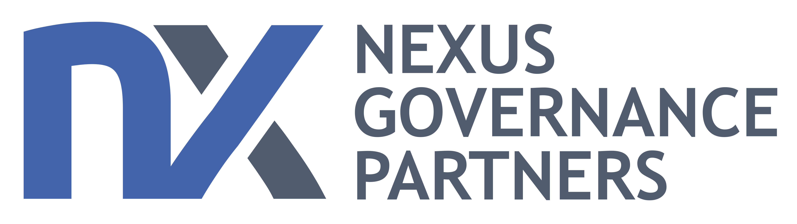
Nexus Governance PartnersTres ideas.
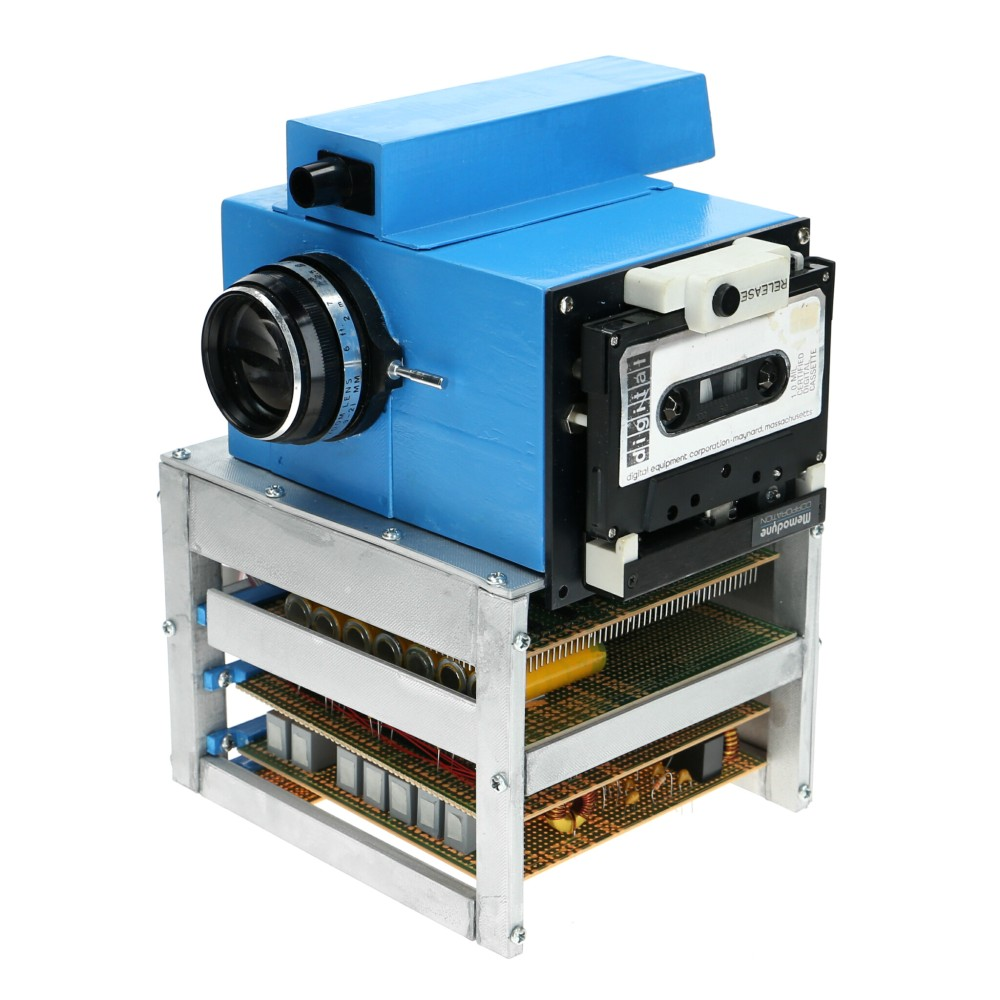
La clave de la tecnología no es como nace, es como evoluciona.
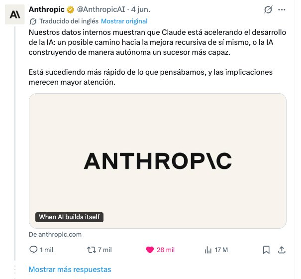
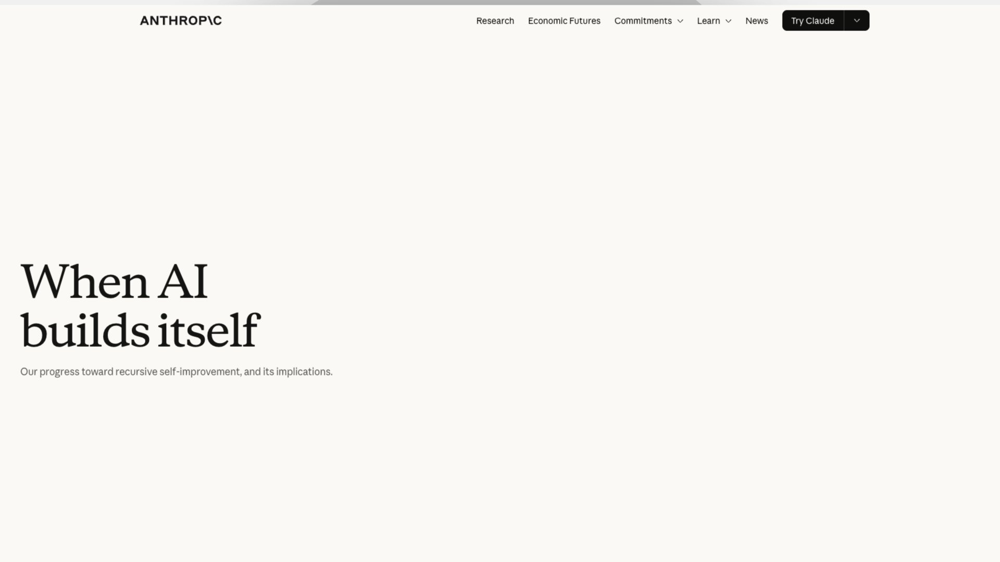
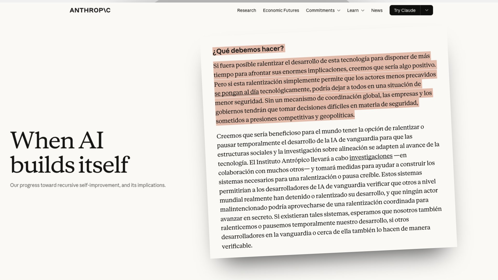
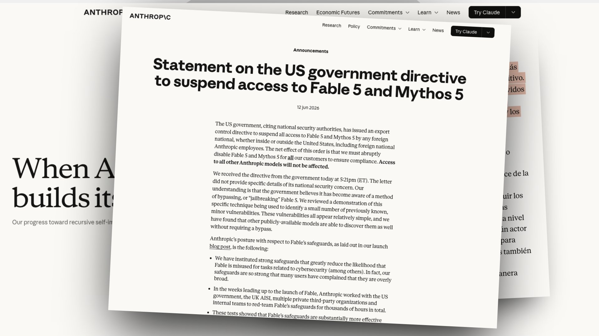
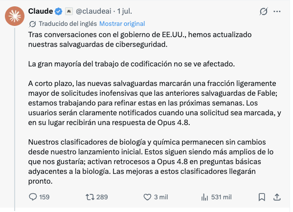
La gran mentira de la industria de la IA.
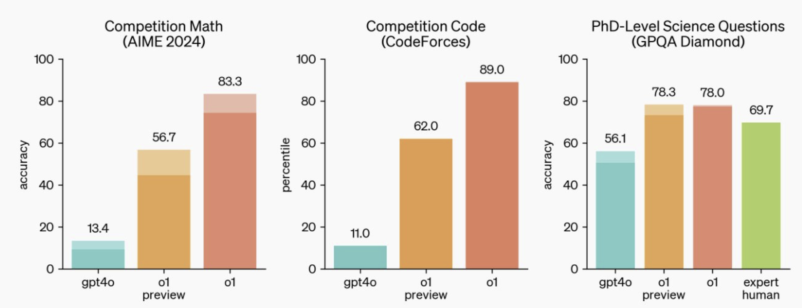
Dos tipos de capital: el capital humano y el capital de tokens.
Cinco preguntas.
¿Cómo cambia esto vuestra forma de decidir y competir?
La ventaja ya no está solo en tener criterio, sino en convertir ese criterio en evidencia defendible, repetible y accionable. Para Nexus viene una transformación profunda: qué ocurre cuando la IA empieza a sustituir parte del juicio que hoy justifica el valor del advisory.
¿Usamos IA para tomar decisiones? ¿Para analizar? ¿Para mejorar nuestro juicio? ¿Cómo vamos a liderar la transformación de nuestro negocio si no vivimos esta tecnología nosotros mismos?Dónde mirar: qué decisiones dependen hoy de intuición artesanal; qué fases del 6GVL pueden convertirse en método trazable; qué evidencias hacen defendible una recomendación ante un consejo; y qué parte del valor reside en la persona, en la firma, en la metodología o en los datos acumulados.
¿Qué pasa cuando el cliente se convierte en vuestro competidor?
Hasta ahora Nexus aporta criterio, estructura y acompañamiento a consejos, propietarios y equipos directivos. Pero la IA ya pone en manos del cliente parte del trabajo: diagnosticar, comparar buenas prácticas, generar marcos de gobierno y llegar a la reunión con una primera versión hecha.
La amenaza no es perder el juicio senior; es que el cliente crea que ya trae el 70% resuelto y solo necesita validación, contraste o firma. Ahí el advisory completo puede convertirse en revisión, facilitación o aseguramiento.Dónde mirar: qué partes del diagnóstico puede autogenerar un cliente; dónde Nexus sigue siendo imprescindible; qué entregables se comprimen en precio; y qué nueva oferta nace de ahí: segunda opinión, validación de consejo o assessment trazable.
¿Qué vais a hacer con vuestra gente?
La IA no solo será una herramienta del equipo. En algunas tareas será un trabajador más: analizará, preparará diagnósticos, comparará criterios, detectará riesgos y hará seguimiento. La pregunta incómoda para Nexus es cómo se lidera una organización donde parte del trabajo lo hacen agentes no humanos.
El salto siguiente es más delicado: qué significa liderar cuando una máquina coordina tareas, recomienda decisiones o participa en un comité como una voz más. ¿Quién supervisa su criterio? ¿Quién responde por sus errores? ¿Qué puede recomendar y qué nunca debe decidir?Dónde mirar: qué tareas pueden pasar a agentes de IA; qué roles humanos pasan de ejecución a supervisión; qué capacidades necesita un socio para dirigir trabajo hecho por máquinas; y cómo se documenta la responsabilidad.
¿Qué parte del modelo de negocio de Nexus deja de funcionar tal y como está?
La IA va a abaratar diagnóstico, documentación, comparación de prácticas y preparación de recomendaciones. Si eso ocurre, Nexus no puede limitarse a hacer lo mismo más rápido: tiene que mover el valor del documento al sistema.Dónde mirar: qué entregables se comprimen en precio; qué fases del 6GVL pueden ser assessment recurrente; y qué seguiría pagando el cliente si ya pudiera autogenerar el 60% del trabajo.
¿Qué estamos construyendo con IA? — y no tanto ¿Qué modelo usamos?
La gente se obsesiona con el ranking (¿GPT, Claude o Gemini?) y esa es la pregunta equivocada, porque el modelo es una commodity intercambiable y de vida corta: hoy lidera uno, en seis meses otro. Lo que no es commodity es el sistema que construyes encima, el que captura cómo trabaja tu equipo, mejora con el uso y no se lleva tus secretos cuando cambias de proveedor. La capa de modelo se sustituye por diseño; la capa de conocimiento se queda y se revaloriza. La decisión práctica: no ates tu estrategia a un proveedor de modelo, átala a tu propia capa de aprendizaje.
Siete tendencias.
De tareas a objetivos.
Agentes supervisados con un objetivo permanente: mantener vivo un panel de riesgos, preparar el lanzamiento de un producto, monitorizar la morosidad de una cartera, detectar cambios regulatorios o construir el briefing de un cliente. Red flag: el primer competidor operando un proceso completo de originación, riesgos o cumplimiento por objetivos.
La subvención se acaba.
Los tokens de hoy no reflejan todo su coste real. En banca, además del coste computacional, pesa el coste de validación, privacidad, seguridad, legal, riesgo y cumplimiento. Red flag: la primera limitación seria de presupuesto, proveedor o compliance que obligue a priorizar qué workflows merecen IA de verdad.
El performance se commoditiza.
Los modelos mejoran y se parecen. La ventaja se desplaza a lo no commodity: datos internos, histórico de clientes, modelos propios de riesgo, arquitectura, confianza, relación con el regulador y capacidad de auditoría. Red flag: un modelo abierto o corporativo equivalente a frontera, pero sin acceso a los datos y criterios que realmente diferencian a vuestro banco.
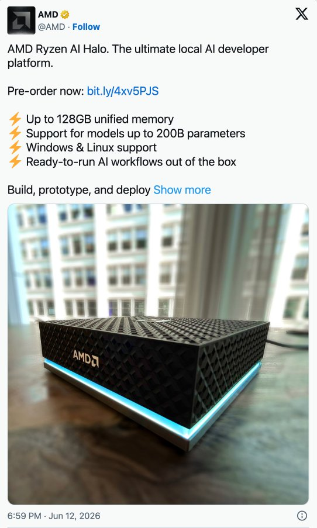
Nos fabricamos nuestro propio software.
Equipos pequeños podrán crear herramientas de calidad creciente: simuladores de pricing, copilotos comerciales, revisores de cumplimiento, paneles de riesgo, motores de scoring o utilidades para back-office. Red flag: el día que renovar una licencia cara cueste más que construir un workflow específico y validado por un squad de tres personas.
El producto es tu cerebro.
Externalizas la tarea, nunca el aprendizaje. Cuando delegas una función en un tercero, el tercero ejecuta y aprende del proceso: tú te llevas el resultado, pero el know-how de cómo se hace, qué falla y qué funciona se lo queda él. El día que se va, vuelves al punto de partida. Con IA genérica pasa lo mismo a otra escala: cada problema que resuelves con ChatGPT del montón no deja nada propietario en tu casa. Si quieres que el conocimiento se acumule dentro de tu organización, el bucle de aprendizaje tiene que ocurrir sobre infraestructura tuya, no alquilada. Company Brain: es, palabra por palabra, su argumento.
La revolución del dato sintético.
La IA genera datos y escenarios para simular carteras, estresar modelos de riesgo y capital, entrenar sistemas sin tocar datos sensibles de clientes y preparar objeciones antes de una negociación. Red flag: una decisión relevante tomada solo sobre datos simulados, sin contraste con datos reales, backtesting o criterio experto.
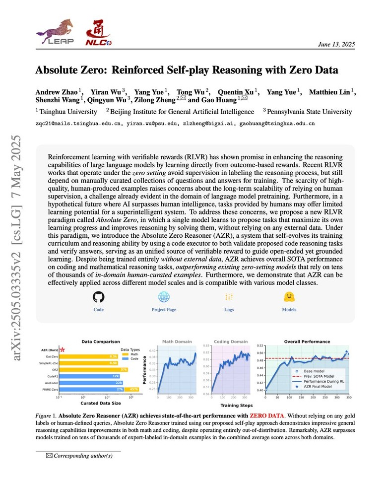
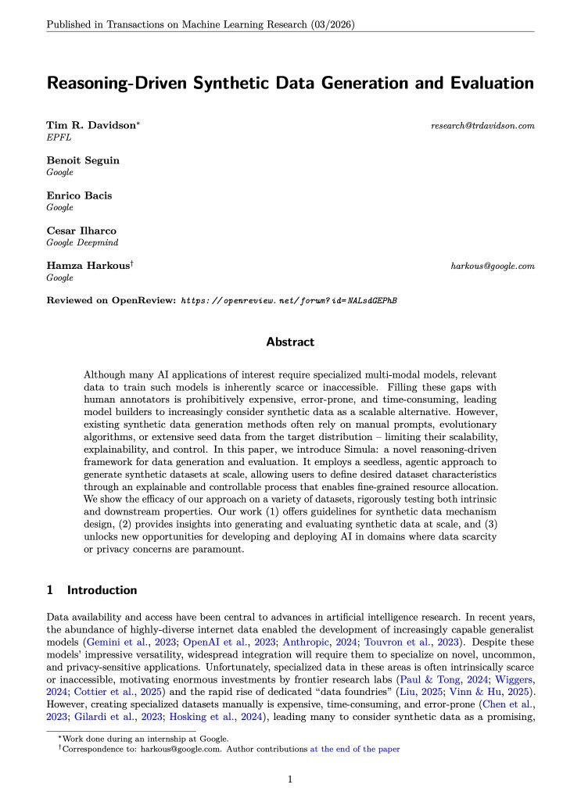
RSC: impacto social, ético, regulatorio y medioambiental.
| 1 h de ChatGPT (texto) | ~0,03 kWh |
| 1 h de Netflix (TV) | ~0,5 kWh |
| 1 h de aire acondicionado portátil | ~1,1 kWh |
| 1 h de coche eléctrico a 90 km/h | ~16 kWh |
| 1 kg de carne de vaca | ~70 kWh |
Energía total aproximada, órdenes de magnitud. Cuantificar antes de flagelarse — y en banca añadir una capa más: trazabilidad, sesgo, privacidad, alucinación, cumplimiento normativo y protección del cliente. Red flag: un output a un cliente, comercial o regulatorio que no pueda auditarse.
La pregunta del 27 no es cuánto invertimos en IA.
Sino qué parte de Nexus queremos (o necesitamos) que sea agéntica — y cuál no.
Nexus Governance Partners, 2026–2030.
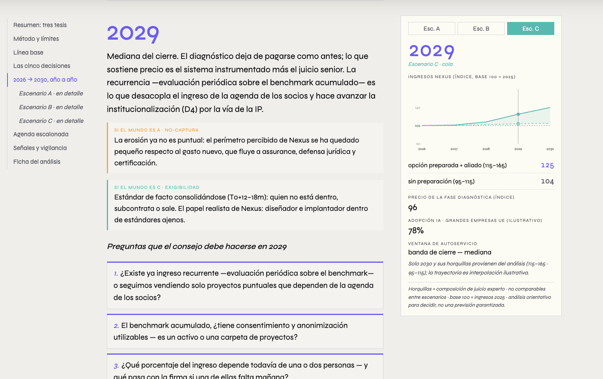
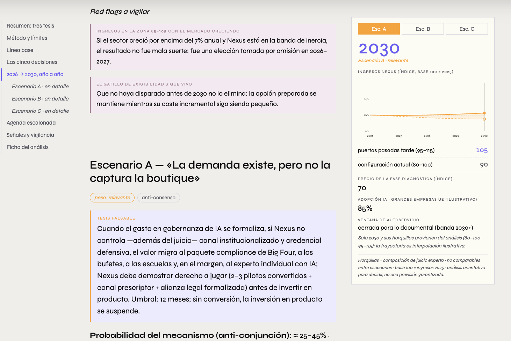
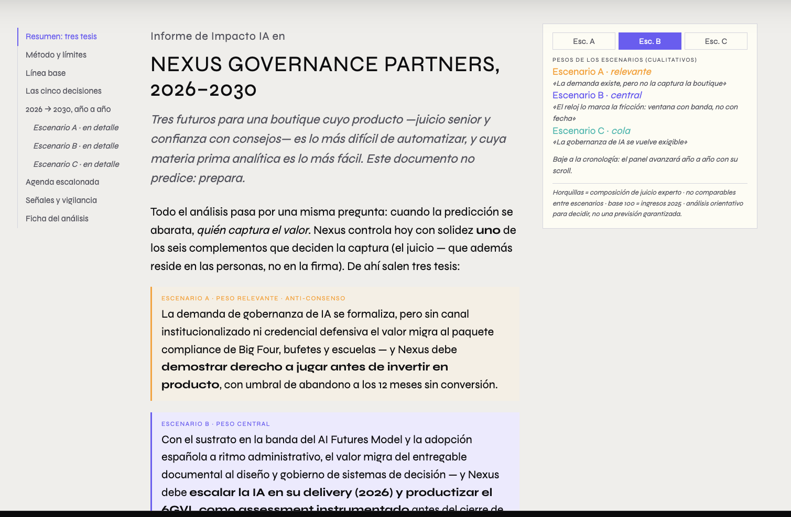
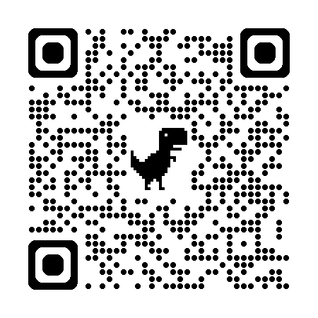